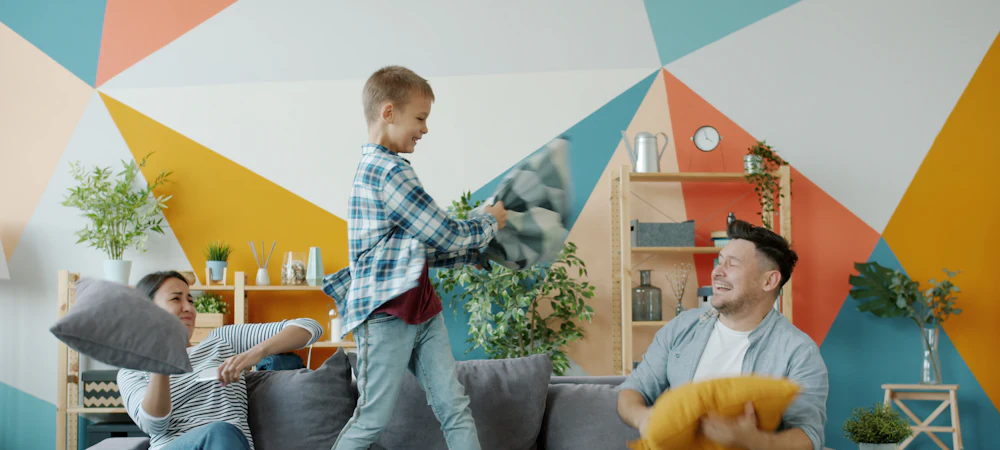

De Fonasa a Isapre: tips para contratar un buen plan y tener una buena experiencia
Lo que revisamos en cada asesoría antes de recomendar nada, y que casi nunca aparece en una cotización.

Ya sea que vengas de Fonasa o que quieras mejorar el plan que tienes, estos son los consejos que más le sirven a la gente para elegir bien y no llevarse sorpresas después.
Un plan más barato con seguro complementario puede rendir más que uno caro
Mucha gente se queda en Fonasa porque asume que un buen plan cuesta una fortuna, y no siempre es así. Si te interesa una clínica en particular, muchas veces conviene un plan de menor precio que cumpla los requisitos del seguro complementario: entre los dos puedes quedar igual o mejor cubierto que con un plan caro. Hay que hacer el cálculo caso a caso, pero la combinación suele rendir más de lo que la gente cree.
Elijas el plan que elijas, en Isapre tienes GES y CAEC
El 7% es variable y no tienes por qué pagar de más para estar protegido ante lo grave. El GES existe en los dos sistemas, pero no se atiende igual: en Fonasa el prestador designado es público, o sea, tu consultorio y el hospital que te corresponde, y en Isapre es una clínica privada de la red que ella misma designa. Y hay algo que en Fonasa no existe: la CAEC. Cualquiera sea el plan que tomes, frente a un evento de alto costo pagas un deducible y desde ahí quedas cubierto dentro de esa red.
Las Isapres volvieron a competir
Tras la Ley Corta, el sistema recuperó estabilidad y las Isapres salieron de nuevo a buscar afiliados. Hoy hay ofertas que hace un par de años simplemente no existían. Si arrastras las alzas de los últimos años y nunca volviste a revisar tu plan, vale la pena mirarlo: es bastante común descubrir que estás pagando de más por lo mismo.
Ojo con quedarte en un plan antiguo por el bono barato
Es de los apegos más caros que existen. Haz la cuenta: si además de tu 7% estás poniendo $30.000 mensuales, son $360.000 al año. Si con eso vas al médico una o dos veces, esa consulta o ese examen a costo $0 ya lo pagaste varias veces. Los números cambian en cada caso, pero el ejercicio es siempre el mismo y casi nadie lo hace.
Si tienes hijos, mira los copagos de urgencia
En las familias con niños el gasto frecuente no es la operación grande: son las urgencias. Busca un plan con copago fijo de urgencia en las clínicas que te interesan, porque no todos lo tienen. Cuando no hay copago fijo aparecen los topes de medicamentos e insumos, que es justamente donde la cuenta se dispara.
Atento con los planes de libre elección
Se venden como la máxima libertad, pero la libre elección te amarra a un arancel: cubre lo mismo en cualquier clínica, y las clínicas no cobran lo mismo. Hoy las Isapres tienen redes preferentes en todo Chile y encima te dan libre elección, así que no hay por qué renunciar a una para tener la otra.
¿Cuál es la mejor Isapre en 2026? Tabla comparativa →
¿Fonasa o Isapre? Qué conviene más →
Los 8 errores más comunes al contratar una Isapre →
¿Conviene contratar una Isapre estando embarazada? →
Preexistencias en Isapres: ¿qué pasa si me quiero cambiar? →
¿Quieres que revisemos tu caso?
Te ayudamos a encontrar el plan que se adapta a ti, gratis y sin compromiso, aunque la respuesta sea quedarte donde estás.
Quiero que me asesoren →La información de este artículo es general y puede cambiar según la normativa vigente. Para evaluar tu caso particular, te recomendamos una asesoría.